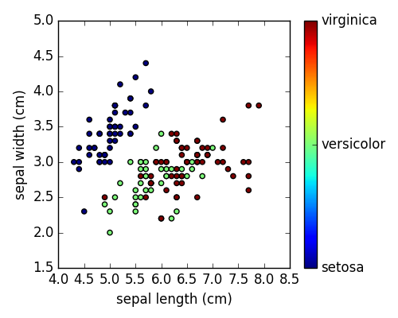

Plot 2D views of the iris dataset¶
Plot a simple scatter plot of 2 features of the iris dataset.
Note that more elaborate visualization of this dataset is detailed in the Statistics in Python chapter.
# Load the data
from sklearn.datasets import load_iris
iris = load_iris()
from matplotlib import pyplot as plt
# The indices of the features that we are plotting
x_index = 0
y_index = 1
# this formatter will label the colorbar with the correct target names
formatter = plt.FuncFormatter(lambda i, *args: iris.target_names[int(i)])
plt.figure(figsize=(5, 4))
plt.scatter(iris.data[:, x_index], iris.data[:, y_index], c=iris.target)
plt.colorbar(ticks=[0, 1, 2], format=formatter)
plt.xlabel(iris.feature_names[x_index])
plt.ylabel(iris.feature_names[y_index])
plt.tight_layout()
plt.show()
Total running time of the script: ( 0 minutes 0.162 seconds)